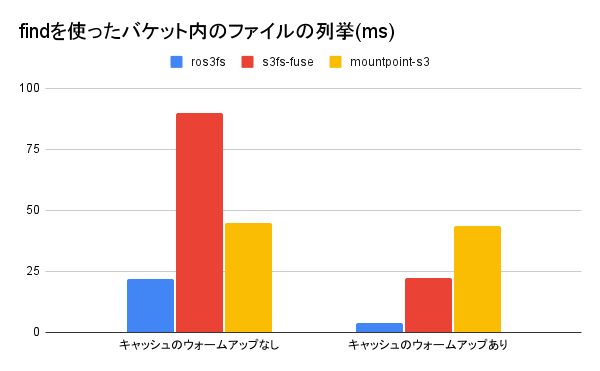

ros3fs - オブジェクトストレージ用の高速な読み取り専用FUSEファイルシステム
S3互換のオブジェクトストレージのためのFUSEファイルシステム、ros3fs (Read Only S3 File System)を作りました。 ros3fsは読み込み専用かつバケットのデータの更新に追随しないという強い制約を設ける代わりに、高速なデータの閲覧を可能にしています。

(小さすぎてグラフでは見えませんが、キャッシュのウォームアップありのros3fsでは15.2 msでした。)
オブジェクトストレージ
AWS S3やCloudflare R2、MinIO、Apache Ozoneなどはオブジェクトストレージと呼ばれるソフトウェアです。オブジェクトストレージはスケーラビリティにすぐれており、AWS S3やCloudflare R2などのクラウドサービスとして提供されている場合は手軽に安価に使い始めることができます。
オブジェクトストレージはファイルをオブジェクトという単位で扱います。オブジェクトはフラットな空間に格納され、ディレクトリという概念はありません。アクセスには通常 REST API を使います。AWS S3が策定した API がよく知られており、Cloudflare R2、MinIO、Apache OzoneはどれもAWS S3互換の API を実装しています。このため、これらのソフトウェアはすべてAWS S3 cli経由で利用することができます。
AWS S3を含むオブジェクトストレージは手軽なのですが、一つ欠点があります。それはデータを通常のファイルのように閲覧できない点です。オブジェクトストレージ上のデータを直接catやgrepすることはできませんし、GNOME Filesのような GUI のファイルマネージャで見ることもできません。
FUSE
このような問題を解決する一つの方法がFUSEです。FUSEとは Filesystem in Userspace の略であり、Linux、Mac OS、Windows1で利用できる技術です。
FUSEを使うとファイルシステムをユーザ空間内に実装できます。このファイルシステムの実装を自由に書くことができるため、例えばopenシステムコールを AWS S3 のGetObject APIに結び付けることで、ファイルを開く操作を自動的に S3 のオブジェクトを取得する操作に変換することができます。
また、オブジェクトストレージにはディレクトリ構造がありませんが、FUSE を使って模擬的にそれを実現することも可能です。オブジェクト名を”/”などのパス区切り文字で区切ったものをディレクトリとしてユーザに見せるように FUSE を実装すれば、オブジェクトストレージがディレクトリを持ったファイルシステムのように見せることができます。
既存の s3 向け FUSE の問題点
S3 互換の API を持つオブジェクトストレージ向けの FUSEファイルシステム には AWS 本家によるmountpoint-s3やs3fs-fuseなどの既存実装があります。どちらを使っても問題なくオブジェクトストレージをファイルシステムとして利用することができます。
しかし、この二つの実装にはどちらも遅いという問題点があります。特にディレクトリ構造を走査するような操作は遅く、オブジェクト数の多いバケットを FUSEファイルシステム でマウントしてlsコマンドを打つと体感できる程度の遅延があります。
ros3fs
この問題を回避してlsの遅延を最小化するために作ったのがros3fsです。ros3fsは S3 互換のオブジェクトストレージのための FUSEファイルシステム であり、ディレクトリ構造の走査を含む読み出しの遅延を最小化することを目的に設計されています。
Linux でros3fsで使うにはビルドする必要があります。Ubuntu 22.04 で ros3fs をビルドする手順は以下の通りです。
$ sudo apt-get install -y cmake g++ git libfuse3-dev ninja-build zlib1g-dev libcurl4-openssl-dev libssl-dev ccache pkg-config
$ git clone https://github.com/akawashiro/ros3fs.git
$ cd ros3fs
$ mkdir build
$ ./build-aws-sdk-cpp.sh ./build
$ cmake -S . -B build
$ cmake --build build -- -j
$ cmake --build build -- install
その後、このコマンドで S3 互換のオブジェクトストレージをマウントできます。AWS SDKを使っているためAWS_ACCESS_KEY_IDやAWS_SECRET_ACCESS_KEYで認証情報を設定できます。マウントした後は<MOUNTPOINT>ディレクトリにオブジェクトストレージのデータがマウントされています。lsやcatなどのコマンドを使って中身を確認することも可能です。
$ ./build/ros3fs <MOUNTPOINT> -f -d --endpoint=<ENDPOINT URL> --bucket_name=<BUCKET NAME ENDS WITH '/'> --cache_dir=<CACHE DIRECTORY>
$ ls <MOUNTPOINT>
dir_a/ testfile_a testfile_b testfile_c
$ cat testfile_a
hoge
先ほど述べたように、ros3fsは読み出しの遅延を最小化することを目的に設計されています。その代償としていくつかの制限があります。まず書き込みはサポートしません。これは書き込みをサポートするとros3fsのキャッシュとオブジェクトストレージの間の整合性をとるのが困難になるためです。
また、ros3fsはバケットに存在するデータと異なる古いデータを読みだすことがあります。遅延を最小化するためにros3fsはデータを極端にキャッシュします。まず、ros3fsは起動時にすべてのオブジェクト名を取得しディレクトリ構造を構築します。また、一度アクセスしたデータはローカルに保存し、二回目以降のアクセスではそのデータを読みます。このため、ros3fsでバケットをマウントした後にそのバケットのオブジェクトが変更された場合、その変更を読みだせないケースがあります。
このような思い切った設計の背景には、筆者のオブジェクトストレージの使い方があります。筆者はオブジェクトストレージをバックアップデータの保存先として使っており、そのバケットの更新頻度は非常に低いです。一方、バックアップしたデータを参照する頻度は更新頻度に比べて高いです。このため、バケットをマウントした後オブジェクトを変更するケースをサポートしない判断をしました。この判断により、読み取りについてはほかの S3 向けの FUSE と比べて大幅に高速になっています。
性能比較
ローカルにApache Ozoneのサーバを構築し、1000 個のテキストファイルをバケットに格納してから、FUSEファイルシステム でマウントしgrepで検索した時の性能を比較します。この性能比較はbenchmark.shで行いました。
ros3fsはコミットハッシュafa6156e753539b7a530be9c7c25cdb987b5ffad、s3fs-fuseはV1.90、mountpoint-s3はv1.0.2を使い、OS はUbuntu 22.04.2 LTS、CPU はAMD Ryzen 9 5950Xです。
測定はros3fsに含まれるスクリプトを使って行いました。まず、オブジェクトストレージソフトウェアの一つであるApache Ozoneを起動します。
./launch-ozone.sh
次に別のターミナルで./benchmark.shを起動するとOzoneにバケット、オブジェクトを作成し、各FUSEファイルシステムでマウントした上で測定を行います。
`./benchmark.sh` の実行結果の例
```bash ./benchmark.sh # 省略 ========== Compare grep performance without cache warmup ========== time grep -r /home/akira/ghq/github.com/akawashiro/ros3fs/build_benchmark/ros3fs_mountpoint -e 123 real 0m3.046s user 0m0.000s sys 0m0.021s time grep -r /home/akira/ghq/github.com/akawashiro/ros3fs/build_benchmark/s3fs-fuse_mountpoint -e 123 real 0m2.042s user 0m0.005s sys 0m0.016s time grep -r /home/akira/ghq/github.com/akawashiro/ros3fs/build_benchmark/mountpoint-s3_mountpoint -e 123 real 0m8.660s user 0m0.004s sys 0m0.024s ============================================================ ========== Compare grep performance with cache warmup ========== Benchmark 1: grep -r /home/akira/ghq/github.com/akawashiro/ros3fs/build_benchmark/ros3fs_mountpoint -e '123' Time (mean ± σ): 15.2 ms ± 1.1 ms [User: 1.9 ms, System: 4.1 ms] Range (min … max): 12.7 ms … 17.0 ms 10 runs Benchmark 1: grep -r /home/akira/ghq/github.com/akawashiro/ros3fs/build_benchmark/s3fs-fuse_mountpoint -e '123' Time (mean ± σ): 2.056 s ± 0.028 s [User: 0.004 s, System: 0.019 s] Range (min … max): 2.009 s … 2.112 s 10 runs Benchmark 1: grep -r /home/akira/ghq/github.com/akawashiro/ros3fs/build_benchmark/mountpoint-s3_mountpoint -e '123' Time (mean ± σ): 10.866 s ± 2.068 s [User: 0.007 s, System: 0.023 s] Range (min … max): 8.913 s … 14.761 s 10 runs ========================================================= ========== Compare find performance without cache warmup ========== time find /home/akira/ghq/github.com/akawashiro/ros3fs/build_benchmark/ros3fs_mountpoint real 0m0.022s user 0m0.005s sys 0m0.000s time find /home/akira/ghq/github.com/akawashiro/ros3fs/build_benchmark/s3fs-fuse_mountpoint real 0m0.090s user 0m0.001s sys 0m0.000s time find /home/akira/ghq/github.com/akawashiro/ros3fs/build_benchmark/mountpoint-s3_mountpoint real 0m0.045s user 0m0.000s sys 0m0.003s ============================================================ ========== Compare find performance with cache warmup ========== Benchmark 1: find /home/akira/ghq/github.com/akawashiro/ros3fs/build_benchmark/ros3fs_mountpoint Time (mean ± σ): 4.0 ms ± 0.2 ms [User: 1.1 ms, System: 0.4 ms] Range (min … max): 3.7 ms … 4.5 ms 10 runs Warning: Command took less than 5 ms to complete. Results might be inaccurate. Benchmark 1: find /home/akira/ghq/github.com/akawashiro/ros3fs/build_benchmark/s3fs-fuse_mountpoint Time (mean ± σ): 22.5 ms ± 1.9 ms [User: 0.8 ms, System: 0.3 ms] Range (min … max): 19.2 ms … 26.0 ms 10 runs Benchmark 1: find /home/akira/ghq/github.com/akawashiro/ros3fs/build_benchmark/mountpoint-s3_mountpoint Time (mean ± σ): 43.8 ms ± 2.5 ms [User: 1.1 ms, System: 0.4 ms] Range (min … max): 41.2 ms … 49.3 ms 10 runs ========================================================= ```
小さすぎてグラフでは見えませんが、キャッシュのウォームアップありのros3fsでは15.2 msでした。

キャッシュのウォームアップがあるとros3fsが圧倒的に高速に動作します。ローカルにすべてのデータを保存するためこの結果はごく自然です。
今後の課題
ros3fsの実装の成熟度は、僕が普段使いできる程度でしかなく、明らかな問題がいくつかあります。一つ目はエラーハンドリングの甘さです。ユーザ空間で動かし想定外の挙動をした場合はエラーメッセージを出してすぐに終了するようになっています。特に、S3 APIのエラーが返ってきた場合は何もせずに終了していますが、本来はエラーコードを見て適切にハンドリングする必要があります。二つ目はキャッシュの容量制限がないことです。ros3fsは一度アクセスしたオブジェクトをローカルにキャッシュとして保存しますが、このキャッシュに容量制限がありません。一定時間ごとにキャッシュをクリアする機能はありますが、容量制限をかけて最もアクセス日時が古いものを削除するような機能が必要です。
まとめ
S3 互換のオブジェクトストレージのための FUSEファイルシステム、ros3fsを実装しました。ros3fsは読み込み専用かつバケットのデータの更新を反映しないという強い制約のもとではありますが、既存実装に比べて非常に高速なデータの閲覧が可能にしました。
お願い
https://github.com/akawashiro/ros3fs をスターしてください。励みになります。
連絡先
この記事に誤りがあった場合はTwitter、Mastodon等で連絡をください。修正します。その他の連絡先は https://akawashiro.com/ にあります。